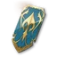
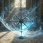
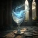

Após o nível 45
A ordem de evolução dos equipamentos, do nível 45 até a raid do dragão para 10 jogadores. Os números indicam o nível de item.
Dados do cliente Baseado nos dados do cliente anteriores ao lançamento, apresentados por Sanya Jacuzzi, e na planilha de TitanTheF, baseada em Taiwan. Confira os valores no servidor atual. Os blocos de vídeo apontam para os trechos correspondentes. Sanya JacuzziSywoGGTitanTheF
- O que muda no global
- 45História, missões regionais e seu mapa
- 1400Para 1,400Shugo, Nightmare, Draupnir
- 1900Para 1,900: Vakron
- 2100Para 2,100: ★ 2 Transcendência
- 2500Para 2,500: Ferocious Horn Den
- 2800Para 2,800: arco de ouro e o ataque
- Rota Hardcore: melhorar um branco bamouse, em seguida, transferir
- Rota do TitanTheF: fazenda de Abismo e uma arma trabalhada
- Como as mudanças funcionam.
- Dicas para todos.
O que muda no global
Da mina de dados do cliente global. É por isso que a rota coreana não funciona mais como está.
| Ponto do mapa. | No seu mapa. | No mapa inimigo. |
|---|---|---|
| Masmorra selada (?) | Kina, 1,000 AP, 2,500 | |
| Stronghold. | AP |
- Inimigo? Marcas perderam os cristais Daevanion - eles costumavam ser o objetivo principal no lançamento, agora limpá-los em seu próprio ritmo.
- Penas (
 Empyrean Trace: Altgard ) são nerfed - recolher todos eles, mas por último.
Empyrean Trace: Altgard ) são nerfed - recolher todos eles, mas por último. - Gear tem um nível de item mais baixo no global (por exemplo, verdadeiro Senhor Dragão Grande espada: 70 em KR/TW, 62 em global) - nível de item mais baixo significa melhoria mais barata.
História, missões regionais e seu mapa
Milestones. Você alcança 45 em nível de item 700. O último passo da história principal (no Abismo) pede sobre 1,000 - se não deixar você entrar, faça os passos abaixo primeiro e volte: cristais Daevanion, runas de choque, cinto e amuleto, Exploração: Draupnir. ▶ SywoGG 0:46
- Termine a história principal primeiro. Ele dá uma arma de ouro para sua classe,
 Ascension Bracelet e
Ascension Bracelet e  Ultimate Daeva Wings (equipado: HP 500, MP 250, penetração 500, ataque crítico 35; propriedade: penetração 100, precisão + 20, ataque + 10). ▶ 1:27
Ultimate Daeva Wings (equipado: HP 500, MP 250, penetração 500, ataque crítico 35; propriedade: penetração 100, precisão + 20, ataque + 10). ▶ 1:27 - Buscas Regionais (Journal → Regional): dois anéis, dois brincos e um colar (azul), mais duas runas PvE. Eles também dão títulos e peitos de Theostone.
- Melhore um pouco, configure sua macro PvE e limpo a cada um em seu próprio mapa : cada masmorra selada dá
 Daevanion Crystal × 2 e 2 pontos de habilidade, cada fortaleza
Daevanion Crystal × 2 e 2 pontos de habilidade, cada fortaleza  Noble Belt Enhance Scroll × 2.
Noble Belt Enhance Scroll × 2. - Então as missões regionais restantes e as penas pelo menos 95 Empyrean Trace: Altgard levam o Monolito para o nível 11, que atualiza o amuleto de verde para azul.
- Clash runas (
 Clash Rune Chest ): 60 nível de item cada, então o par é + 120. Eles vêm de missões verdes ao redor do mapa, ou comprá-los na loja Nightmare (Crescer tab) com a moeda da primeira liberação. Não os melhore além do 1 a menos que tenha um sobressalente. ▶ SywoGG 2:32
Clash Rune Chest ): 60 nível de item cada, então o par é + 120. Eles vêm de missões verdes ao redor do mapa, ou comprá-los na loja Nightmare (Crescer tab) com a moeda da primeira liberação. Não os melhore além do 1 a menos que tenha um sobressalente. ▶ SywoGG 2:32 - A pulseira da história (Ascension Bracelet ) fica com você por meses: levá-lo para + 10 - 11 - acrescenta ataque e defesa também - e colocar o seu um
 Superior Manastone nele: dois rolos de ouro dar o nível mais item. O segundo bracelete vem de uma busca da sua própria facção (nível 43).
Superior Manastone nele: dois rolos de ouro dar o nível mais item. O segundo bracelete vem de uma busca da sua própria facção (nível 43).
Para 1,400Shugo, Nightmare, Draupnir
Sem o inimigo, você acaba em torno de 1,279 - cerca de 121 menos do 1,400 necessário para as masmorras de nível 2. É assim que se fecha a lacuna.
Shugo Festival e chefe fendas
Mini-jogos com um cartão de recompensa no final. Sua casa decide quantas cartas você abre. Se você se colocou mal você pode pular a recompensa - o  Shugo Festival Reward Key só é gasto quando você levá-lo. Chaves: 7 por padrão, + 1 por dia, até 30 mais armazenados - não deixe que cap. ▶ 5:06
Shugo Festival Reward Key só é gasto quando você levá-lo. Chaves: 7 por padrão, + 1 por dia, até 30 mais armazenados - não deixe que cap. ▶ 5:06
| Lugar | Cartas |
|---|---|
| 1st | 4 |
| 2ND, 3rd | 3 |
| 4 th e mais baixo | 2 |
Boss rifts (por exemplo. Beritra Air Raid: segure as ondas, e depois mate o mini-chefe. 100 pontos de contribuição = 3 cartões , as mesmas recompensas que Shugo. Convide Chanters, Clerics e Templários bem no portal. Seus fãs da festa facilitam o 100. ▶ 5:54
O prêmio principal é moeda Shugo: gastar tudo isso em  Daevanion Crystal na loja do festival - por personagem, o preço sobe em etapas: 50 (× 10 ), 100 (× 10 ), 200 (× 15 ), 400 (× 15 ) -
Daevanion Crystal na loja do festival - por personagem, o preço sobe em etapas: 50 (× 10 ), 100 (× 10 ), 200 (× 15 ), 400 (× 15 ) -  Centuryroot Token × 10,500 no total. ▶ 6:36
Centuryroot Token × 10,500 no total. ▶ 6:36
Pesadelo.
- Masmorra de chefe solitário. A base 14 tenta reabastecer por conta própria (+ 2 por dia), mais uma segunda piscina de até 30 que você enche com ingressos; cargas começam a acumular-se no nível 45 - chegar até ele antes da primeira reinicialização. ▶ 7:06
- Todo chefe tem níveis de desafio 10, matar cada um em todos eles. Uma tentativa é gasta apenas em uma morte, então saia e volte mais forte. Cinzas primeiro, depois verdes, depois o último chefe.
- O primeiro limpinho dá
 Phantasmal Fragment × 500, repete 100. Loja, guia de crescimento: Daevanion Crystal para 300 (50 por personagem),
Phantasmal Fragment × 500, repete 100. Loja, guia de crescimento: Daevanion Crystal para 300 (50 por personagem),  Stigma Shard para 1,500 (35), Clash Rune Chest para 500. Fique com o 14,000 para a estátua.
Stigma Shard para 1,500 (35), Clash Rune Chest para 500. Fique com o 14,000 para a estátua.
Expedição: Conquista - Draupnir
- Passe para a garantia : 14 peito abre (7 com prêmio), 40 Odyle energia cada. O objetivo são duas peças de ouro de gotas e um terço da garantia - você escolhe qual peça Bakarma (
 Bakarma Breastplate, leme, pauldrons, luvas, torresmos, botas). ▶ 7:45
Bakarma Breastplate, leme, pauldrons, luvas, torresmos, botas). ▶ 7:45 - Recolha todos os Empyrean Trace: Altgard em Caótica Baixa Reshanta: os níveis de ressonância Monolítica dão cristais Daevanion, como
 Daevanion Crystal: Azphel.
Daevanion Crystal: Azphel. - Ainda é curto? Três corridas de Exploração : Draupnir garante outra peça de ouro - pegue qualquer que você não tem e coloque um
 Intermediate Manastone nela.
Intermediate Manastone nela.
Melhoramento em 1,400
| Fenda. | Nível. | Manastone. |
|---|---|---|
| Arma de ouro e pulseiras. | +10 | |
| Armadura de ouro de Draupnir | +10 | |
| Armadura azul, brincos, colar, anéis | +5 | |
| Cinto, amuleto. | +3 | — |
Além de uma Theostone verde na arma (por exemplo  Theostone: Jumentis's Dexterity) - as missões regionais distribuem uma. Feito certo, isso é exatamente 1,400. ▶ 8:27
Theostone: Jumentis's Dexterity) - as missões regionais distribuem uma. Feito certo, isso é exatamente 1,400. ▶ 8:27
Cinto, amuleto e energia Odyle
- Cinto e amuleto: verde → azul em Substância Morph, então até o ouro — um grande salto no nível do item. Aumentando-os come pedras de aprimoramento: o inimigo marca (através da fenda, a cada 3 horas) dar 2,500
 Enhance Stone cada - ver a mesa no topo. ▶ SywoGG 6:24
Enhance Stone cada - ver a mesa no topo. ▶ SywoGG 6:24 - Gastar energia Odyle com cuidado: depois de cada nova peça melhorá-lo, adicionar manastones, verificar o seu nível de item, e só então decidir para onde ir a seguir - outra corrida da mesma masmorra ou algo que você ainda não fez.
Para 1,900: Vakron
- Fazenda Vakron Sky Island (2 - 5 jogadores, 40 energia um peito) até que você tenha quase todo o conjunto de armaduras. Armas e acessórios são melhor elaborados depois, então o Urugugu Canyon (arma, acessórios) pode esperar. ▶ 9:06
 Vakron Guard não tem alternativa antes. Se não cair, cada tórax 21s t dá
Vakron Guard não tem alternativa antes. Se não cair, cada tórax 21s t dá 
Gear Change Voucher: Vakron Sky Island; dois deles + 1,500,000 kina fazem o guarda na substância Morph.- Leve o set para + 10. Se você comprou cada cristal Daevanion, você deve estar em torno de 1,900. Curto? Manastones, ou uma corrida em cada chefe da Transcendência 1 - cinza arcana adicionar cerca de 40.
Para 2,100: ★ 2 Transcendência
Corra ★ 2 Transcendência até que você tenha as duas fendas verdes - sino e espelho (Bell of Vigor,   Mirror of Magic, item nível 40 cada). Encha as outras slots com arco cinza (
Mirror of Magic, item nível 40 cada). Encha as outras slots com arco cinza (
- A transcendência começa no 1,600. Cinco caça-níqueis arcana: um cartão cinza dá nível de item 20, 40 verde, 60 azul. Um conjunto verde completo é + 200 (1,600 → 1,800 ), trocá-lo por azul é outro + 100. ▶ SywoGG 8:46
Para 2,500: Ferocious Horn Den
Vá direto para Ferocious Horn Den (a comunidade da RU chama de "o cão") e fique até que você tenha a maioria de suas armaduras. Mova seu aprimoramento Vakron para as novas peças com a transferência de engrenagens. ▶ 10:18
O Templo de Fogo, a outra masmorra desta camada, larga a arma e os acessórios. ▶ SywoGG 11:16
Para 2,800: arco de ouro e o ataque
Arcona de ouro fazenda em ★ 4 Transcendência e rolar as habilidades que você precisa para suas configurações PvE e PvP (por exemplo  Mirror of Vigor + 5 com o conjunto de vigor primal). No 2,800 o 10-jogador de dragões o se abre, o PvE mais difícil da temporada 1 e uma fonte de recursos para a próxima atualização. ▶ 10:30
Mirror of Vigor + 5 com o conjunto de vigor primal). No 2,800 o 10-jogador de dragões o se abre, o PvE mais difícil da temporada 1 e uma fonte de recursos para a próxima atualização. ▶ 10:30
A partir daqui + 10 - 11 não é suficiente: o equipamento passa + 15 para + 20, e acima + 15 que precisa de  Amplify Stone (Unique). Não leve todo o equipamento do calabouço para + 20 - artes artesanais (nível de itens 94 e 102 contra 86 de gotas) é o que vale + 20 e manastones bem ajustados. ▶ SywoGG 11:32
Amplify Stone (Unique). Não leve todo o equipamento do calabouço para + 20 - artes artesanais (nível de itens 94 e 102 contra 86 de gotas) é o que vale + 20 e manastones bem ajustados. ▶ SywoGG 11:32
Rota Hardcore: melhorar um branco bamouse, em seguida, transferir
Os mesmos passos de cima, mas salvando cada pedra e kina. Depende da mina de dados se aguentar. Se as transferências forem limitadas no lançamento, pule isso.
- O custo do aumento aumenta com o nível de item (Vakron Cloak, 76: 380 pedras e 9,500 kina uma tentativa; Abismo Pulseira, 84: 420 e 10,500 ). Depois de + 10 a chance cai (+ 13 → + 14:25%, + 5% após cada falha) e uma tentativa no custo máximo sobre 2 milhões de kina. ▶ 11:48
- Uma pedra de transferência (
 Transfer Stone: Weapon (Unique),
Transfer Stone: Weapon (Unique),  Transfer Stone: Armor (Unique)) move o nível de realce e rola estatísticas para qualquer item - mesmo da peça de ouro mais barata para a melhor. Feito em Substância Morph de equipamento de ouro.
Transfer Stone: Armor (Unique)) move o nível de realce e rola estatísticas para qualquer item - mesmo da peça de ouro mais barata para a melhor. Feito em Substância Morph de equipamento de ouro. - Plano: use o equipamento de ouro mais baixo, não aumente novas gotas. Quando uma atualização de longo prazo cair, pegue um espaço bamouse para a slot + 15 e transfira. Trabalha para armas, armaduras e guardas, não acessórios (sem fontes baratas).
- É lento sem alts: 3 – 4 extra personagens trazer as pedras de realce adicionais.
Rota do TitanTheF: fazenda de Abismo e uma arma trabalhada
Fonte: TitanTheF
Outra rota da folha de progressão do TitanTheF (experiência Taiwan): menos espera por masmorras, mais abismo e fabricação. Precisa de muito tempo para brincar.
Logo após 45
- Todo Festival de Shugo. Só no nível 45 você recebe as recompensas completas, incluindo equipamentos de ouro e materiais artesanais; global também acrescentou Stigma Shard. Chests e jogos de salto; pular as telhas - recém-chegados arruiná-los.
- Limpar o mapa : cada um e fogueira, as missões lado verde, e pegar cubos escondidos e penas no caminho. Juntamente com seus níveis que é cerca de 316 de 570 Daevanion pontos (nível 136, calabouços selados 122, missões regionais 58); Shugo e Nightmare adicionam 50 cada. Penas levam o altar ao nível 30 e dão um título.
- Então, um dos três: matar multidões até que cada animal de estimação esteja no nível 3 (todos os animais juntos dão poder de combate 55 k), ir para o Abismo (os mesmos animais de estimação mais asas), ou obter uma festa para 3 – 4 corridas de Draupnir . TitanTheF pega Draupnir - primeira marcha, kina e aprimoramento.
- Passe a entrada diária de Pesadelo. Uma corrida da primeira Transcendência para Arcana branca é suficiente. Você só precisa abrir o 2. Veja o mercado de materiais de calabouço T 1 e pegue tudo para a loja da temporada.
- O objetivo dos primeiros dias: moeda para uma criada T 1 arma - é o que você vai melhorar e rolar estatísticas sobre.
Fazendo o Abismo
- No lançamento, você não vai ficar em um lugar. Compre os pergaminhos da busca do NPC na base Abyss - todos eles, branco para ouro (cerca de 1.4 milhões de kina) - e faça os brancos, verdes e azuis.
- Juntamente com os jogadores fazendo as mesmas missões e pular as lutas - eles pagam menos. Rebole as buscas por materiais de ouro ou placas PvP, mas cuidado com a moeda. Então as missões de ouro no centro, depois uma ilha lateral para plantar.
- Vão em pares: dois jogadores ganham mais AP e materiais, e depois dividem o equipamento de ouro. Se a agricultura é impossível, faça as mesmas buscas no mundo - há um mercador em todas as grandes cidades. E não se esqueça de Shugo.
- Matar todos os chefes do mundo uma vez, uma chance de uma queda mais um título de participação. Os cronômetros estão no mapa, há um em quase todas as zonas.
A arma trabalhada e depois
- Assim que o nível do item permitir, limpo o andar 2 da Transcendência também. Então Vakron e Urugugu (Tumbas T 2) - Cuidado com sua energia, venda o que você não precisa e compre materiais T 1.
- Com bastante T 1, nivele sua criação (cerca de 2 milhões de kina, veja Reunindo e crafting ). Crie pelo menos um nível de ouro 60 em branco - não o use ou melhore. Então a arma T 1: nos primeiros dias, ela deve ser lançada em não mais do que cerca de 30 milhões de kina.
- Não pegue a arma acima de + 10 ainda - a seguir são os anéis (três vezes mais bamouses do que armas). Tente a transcendência 3 se a energia e o equipamento permitirem, caso contrário matará mais multidões. O calabouço solo com pedras de reforço: ir apenas para as pedras, e só depois de elevar o nível do seu item - mais multidões mortas, maior recompensa.
- De volta ao Abismo, não no centro, um canto com um pequeno bando de mafiosos. 8 - 10 horas disso dá uma pilha de AP, kina, equipamentos e materiais; nada paga melhor nos primeiros dias.
- Termine o anel, depois arcana, com arco azul e equipamento melhorado tente o T3 Masmorras. Role estatísticas apenas em T.3 Equipamento de masmorra. Quando a energia acabar, role o gênero (sobre 10 Não bloqueie as estatísticas antes do nível. 10Cubos escondidos dão 1,000 Cristais, o suficiente para o nível. 10.
- Não gaste kina livre em melhorias, só em comprar materiais.
- Mais tarde: energia para as masmorras T 3, transcendência 4 com uma boa festa, arcana até o nível 20. Depois de 2 - 3 dias Abyss mata pagar bem; comprar o colar para pontos Abyss e melhorá-lo é bom, mas não todo o Abyss definido no início - o primeiro AP entrar em estigmas. Não ignore as atividades de Abyss, chefes semanais e batalhas de artefatos. Eles dão medalhas para o jogo PvP. Brincos podem vir de Kromede, a próxima atualização é um guarda criado.
A rota econômica
Para aqueles que podem jogar 10 horas por dia, Shugo como de costume, o resto do tempo reunindo. Prioridade: Odyle e madeira, também safiras, rubis e diamantes, nível se juntando rápido e esquecer o nível do item. As pessoas que conhecem o jogo compram materiais de ouro e materiais em geral, e o fabricação fica mais fácil para você também. Você também pode comprar kuna para kina na casa de leilões e virar pinturas, materiais e couro (bamouse agora, dez vezes mais por semana depois). Bots são um risco aqui.
Alts.
Com 10 - 16 horas no lançamento, coloque o tempo em seu principal e comece alts após 1 - 2 dias, quando as zonas de partida estão mais vazias. Com menos tempo, leve os caracteres 4 para o nível 22 primeiro e só então termine o principal - até então a energia dos alts está cheia.
Como as mudanças funcionam.
Fonte: TitanTheF
As cinco abas de reforço em resumo: "Enhance", Manastone, Theostone, Soul Binding and Transfer".
| Classe de engrenagem. | Melhoramento máximo. |
|---|---|
| Azul | +15 |
| Ouro | +20 |
| Laranja | +25 |
- Melhorar. Equipamento de ouro tem uma chance 100% até + 10, depois disso ele cai. Uma falha nunca quebra o item - apenas os materiais e kina são gastos. Acima de + 15 você também precisa de
 Amplify Stone (Unique), feito em substância Morph de
Amplify Stone (Unique), feito em substância Morph de  Amplify Stone Fragment (Unique) e Enhance Stone.
Amplify Stone Fragment (Unique) e Enhance Stone. - Manastones. O número de slots depende da raridade: 1 branco, 2 verde e assim por diante. Existem dois tipos, para armas e armaduras, e para acessórios, cada um em uma versão normal e PvP (Superior Manastone).
- Theostones vão para a arma e o guarda: danos, dano contínuo ou controle. Eles disparam com uma chance de ataque. Quanto maior a sua velocidade de combate, mais frequentemente (
 Theostone: Jumentis's Dexterity ).
Theostone: Jumentis's Dexterity ). - Soul Binding. Tab 1 aumenta a qualidade das estatísticas, tab 2 rerolls - com qualquer equipamento de ouro desnecessário ou itens de reroll - tab 3 usa livros.
 Sync Stone (Unique) vem do passe de batalha, masmorras duras e masmorras do 2,800.
Sync Stone (Unique) vem do passe de batalha, masmorras duras e masmorras do 2,800. - Transfer move realce e estatísticas para outro item - ver a rota hardcore acima.
- Títulos cada um dá estatísticas passivas, a informação do título mostra como obter um.
- A temporada dura 2 – 3 meses. Pontos da temporada compram materiais de fabricação na loja da temporada.
Dicas para todos.
Contmouses diários (Journal → Duty → Missão) reiniciam todos os dias. Apenas a primeira recompensa aleatória é garantida, os outros são uma chance que cai ao longo da lista - 100%, 50%, 33%, 25%, 10%. ▶ 14:18
- Pegue todos os contmouses com a chave dourada em slots 1 - 4.
- Sem chave: falta de pedras de realce, a que tem mais pedras, caso contrário, a que tem mais arco-íris e outras pedras de estimação.
- Um item ou recurso dourado no final da lista é quase sempre uma armadilha - pule esses.
Cubos ocultos dão cristais 1,000 cada - pegue cada um que você passar. Unbound kina é para comprar materiais, não para melhorar. TitanTheF
Daily Dungeon e os testes: não os toquem e não abram suas caixas de passe se forem entregues no lançamento. Eles estão sendo retrabalhados, recompensas dependem da sua pontuação (velocidade de morte), e eles se refrescar apenas no final da semana - vá então, em seu mais forte. O mundo semanal e as recompensas de Abyss também estão sendo retrabalhadas. Espere pelos números ao vivo. ▶ 15:21
De onde mais vem o poder de combate?
- Estigmas e seus níveis, o maior salto individual. ▶ SywoGG 13:20
- Liga de Almas: rerole as estatísticas de sua arma, guarda e acessórios para melhores (por exemplo, Ataque Crítico → Velocidade de Ataque).
- Itens ofensivos passados + 15 - cada passo adiciona Ataque %.
- Títulos, decorações Pantheon (Ilusão e Sabedoria têm as melhores estatísticas) e asas - Vakron ou Nightmare asas são grandes.
- Rebobinando as estatísticas do ramo Pet/Genus Insight, e afinando as pedras e as pedras da alma para estatísticas ofensivas.
- Peles de armas: desmontá-las em alts e usar combinar em seu principal - cada arma que você desbloquear adiciona danos com esse tipo de arma.